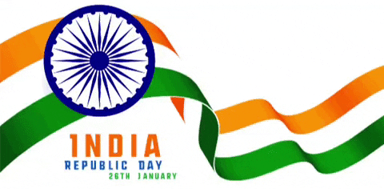

|  |
Festivals Of India |
|
Home | Contact Us | Types of Festivals | Feedback |
| Photo Gallery |
|
Live the Moments ..... |
Some Famous Festivals: |
Indian Festivals
celebrated by varied cultures and
through their special rituals add to the colours of Indian Heritage. Some festivals
welcome
the seasons of the year, the
harvest, the rains, or the full moon. Others celebrate religious occasions, the
birthdays of
divine beings, saints, and
gurus (revered teachers), or the advent of the New Year. A number of these festivals are
common to most parts of India,
however they are celebrated differently in different parts of the country.....
|
Home | Privacy Policy | Terms of Service | Feedback
Made By: MOHD WASI IMAM
2024 © Festivals Of India | All Rights Reserved
Roll No: 24CSMSA122